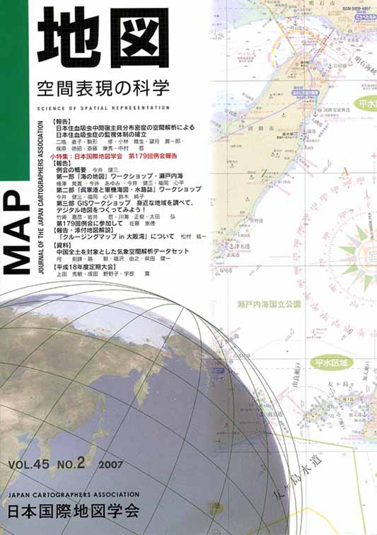
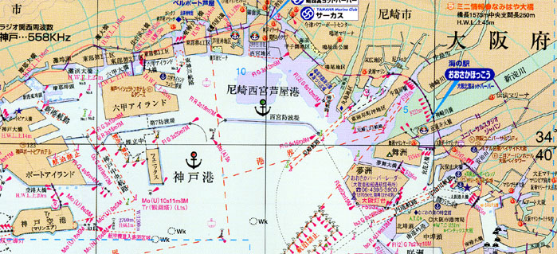

| 最 新 号 | バックナンバー | 添付地図目録 | 投 稿 規 程 |
Vol.45 No.2 （通巻１７８号） ２００７年
| 【報告】 | 日本住血吸虫中間宿主貝分布密度の空間解析による日本住血吸虫症の監視体制の確立 | 二瓶直子・駒形 修・小林睦生・望月貫一郎・梶原徳昭・斎藤康秀・中村 哲 |
| キーワード：日本住血吸虫症、ミヤイリガイ、密度分布図、空間分析、ＧＰＳ | ||
| 小特集：日本国際地図学会 第179回例会報告 | ||
| 【報告】 | 例会の概要 | 今井健三 |
| 第一部 「海の地図」ワークショップ・瀬戸内海 | 梅澤晃寛・今井あゆみ・今井健三・福岡心平 | |
| キーワード：航海用電子海図（ＥＮＣ）、ＧＰＳ、ＡＩＳ、紙海図、水路誌、対景図 | ||
| 第二部 「呉軍港と軍機海図・水路誌」ワークショップ | 今井健三・福岡心平・鈴木純子 | |
| キーワード：軍機海図、水路誌、呉軍港、機密図、機密圖取扱規定、戦時改描版 | ||
| 第三部 GIS ワークショップ 身近な地域を調べて，デジタル地図をつくってみよう！ －ヒロシマ原爆痕跡をGIS でマッピング－ | 竹﨑嘉彦・岩井 哲・川瀬正樹・太田 弘 | |
| キーワード：ＧＩＳワークショップ、原爆、空中写真、教育ＧＩＳ | ||
| 第179回例会に参加して －海のナビゲーションを考えるワークショップ－ | 佐藤崇徳 | |
| 【報告・添付地図解説】 | 「クルージングマップin 大阪湾」について | 松村紘一 |
| キーワード：海図、クルージングマップ、瀬戸内海、大阪湾 | ||
| 【資料】 | 中国全土を対象とした気象空間解析データセット | 何 剣鋒・路 毅・福沢由之・柴田健一 |
| キーワード：中国、気象空間解析データ、１Kmメッシュ | ||
| 【平成18年度定期大会】 | 平成18年度定期大会実施報告 | 上田秀敏・塚田野野子・宇根 寛 |
| 【書評・紹介】 | 地図から生まれたパノラマ塗り絵 | 志村 喬 |
| ジュニア 記号の大辞典 | 上田秀敏 | |
| 地図物語 あの日の浅草－昭和26年から30年代の思い出と出会う | 鈴木純子 | |
| 【特別会員のページ】 | 財団法人 日本地図調製業協会 | |
| 株式会社 きもと | ||
| 【学会記事】 | ||
| 【添付地図】 | クルージングマップin 大阪湾 | |
| 海上保安庁刊行日本近海海図索引図（平成19年3月現在） | ||
| 海上保安庁刊行航海用電子海図セル索引図（平成19年3月現在） | ||
| 国土地理院刊行地図一覧図（平成19年6月1日現在 一般図の部） | ||
|
≪No.45 No.2 表紙≫ |
|
|  |
|
|
|
≪No.45 No.2 添付地図－抜粋≫ |
| 
本図を許可なく複製・利用することを禁止します。 |